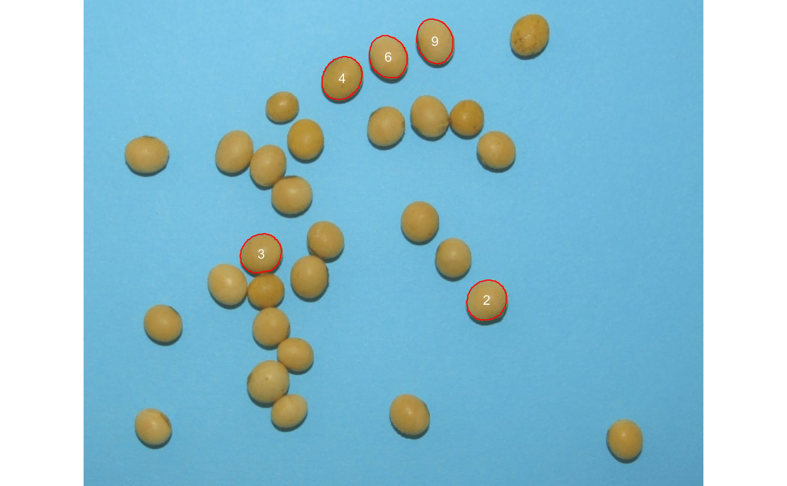
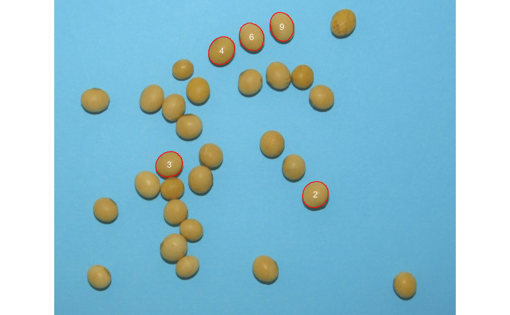
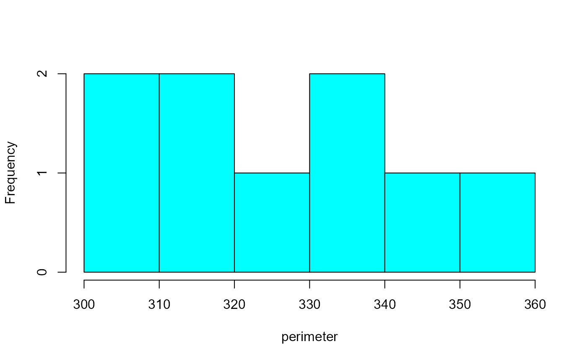
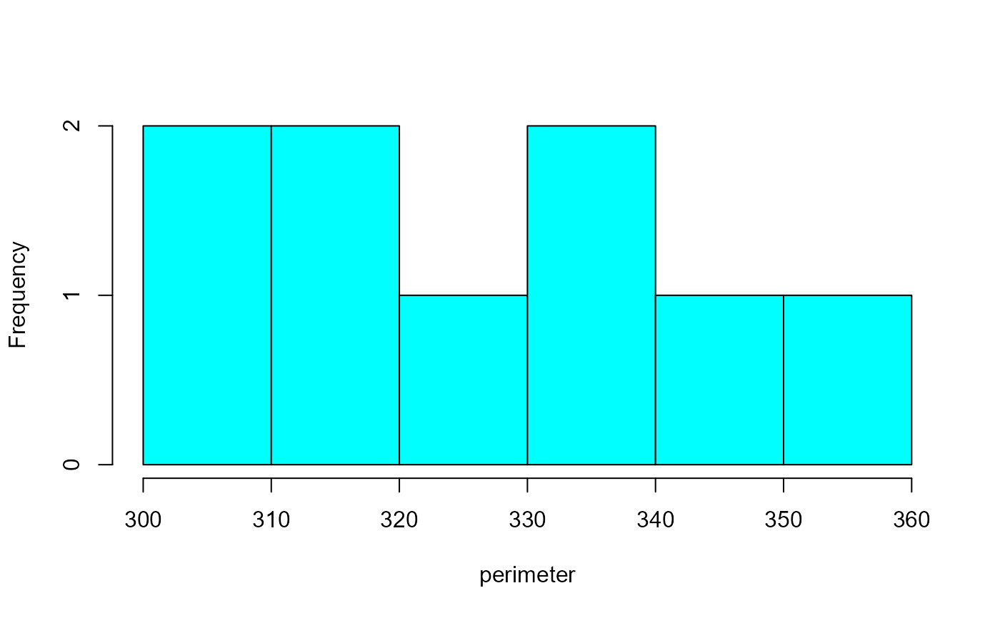

analyze_objects()provides tools for counting and extracting object features (e.g., area, perimeter, radius, pixel intensity) in an image. See more at Details section.plot.anal_obj()Produces an histogram for the R, G, and B values when argumentobject_indexis used in the functionanalyze_objects().
Usage
analyze_objects(
img,
foreground = NULL,
background = NULL,
pattern = NULL,
img_pattern = NULL,
parallel = FALSE,
workers = NULL,
watershed = TRUE,
resize = FALSE,
trim = FALSE,
fill_hull = FALSE,
filter = FALSE,
invert = FALSE,
object_size = "medium",
index = "NB",
my_index = NULL,
object_index = NULL,
threshold = "Otsu",
tolerance = NULL,
extension = NULL,
lower_size = NULL,
upper_size = NULL,
topn_lower = NULL,
topn_upper = NULL,
lower_eccent = NULL,
upper_eccent = NULL,
lower_circ = NULL,
upper_circ = NULL,
randomize = TRUE,
nrows = 2000,
show_image = TRUE,
show_original = TRUE,
show_chull = FALSE,
show_contour = TRUE,
contour_col = "red",
contour_size = 1,
show_background = TRUE,
show_segmentation = FALSE,
col_foreground = NULL,
col_background = NULL,
marker = FALSE,
marker_col = NULL,
marker_size = NULL,
save_image = FALSE,
prefix = "proc_",
dir_original = NULL,
dir_processed = NULL,
verbose = TRUE
)
# S3 method for anal_obj
plot(
x,
which = "measure",
measure = "area",
type = "density",
facet = FALSE,
...
)Arguments
- img
The image to be analyzed.
- foreground
A color palette of the foreground (optional).
- background
A color palette of the background (optional).
- pattern
A pattern of file name used to identify images to be imported. For example, if
pattern = "im"all images in the current working directory that the name matches the pattern (e.g., img1.-, image1.-, im2.-) will be imported as a list. Providing any number as pattern (e.g.,pattern = "1") will select images that are named as 1.-, 2.-, and so on. An error will be returned if the pattern matches any file that is not supported (e.g., img1.pdf).- img_pattern
Deprecated. Use
patterninstead.- parallel
If
TRUEprocesses the images asynchronously (in parallel) in separate R sessions running in the background on the same machine. It may speed up the processing time, especially whenpatternis used is informed. Whenobject_indexis informed, multiple sections will be used to extract the RGB values for each object in the image. This may significantly speed up processing time when an image has lots of objects (say >1000).- workers
A positive numeric scalar or a function specifying the number of parallel processes that can be active at the same time. By default, the number of sections is set up to 50% of available cores.
- watershed
If
TRUE(default) performs watershed-based object detection. This will detect objects even when they are touching one other. IfFALSE, all pixels for each connected set of foreground pixels are set to a unique object. This is faster but is not able to segment touching objects.- resize
Resize the image before processing? Defaults to
FALSE. Use a numeric value of range 0-100 (proportion of the size of the original image).- trim
Number of pixels removed from edges in the analysis. The edges of images are often shaded, which can affect image analysis. The edges of images can be removed by specifying the number of pixels. Defaults to
FALSE(no trimmed edges).- fill_hull
Fill holes in the binary image? Defaults to
FALSE. This is useful to fill holes in objects that have portions with a color similar to the background. IMPORTANT: Objects touching each other can be combined into one single object, which may underestimate the number of objects in an image.- filter
Performs median filtering after image processing? defaults to
FALSE. See more atimage_filter().- invert
Inverts the binary image, if desired. This is useful to process images with black background. Defaults to
FALSE.- object_size
The size of the object. Used to automatically set up
toleranceandextensionparameters. One of the following."small"(e.g, wheat grains),"medium"(e.g, soybean grains),"large"(e.g, peanut grains), and"elarge"(e.g, soybean pods)`.- index, my_index
A character value specifying the target mode for conversion to binary image when
foregroundandbackgroundare not declared. Defaults to"NB"(normalized blue). Seeimage_index()for more details.- object_index
Defaults to
FALSE. If an index is informed, the average value for each object is returned. It can be the R, G, and B values or any operation involving them, e.g.,object_index = "R/B". In this case, it will return for each object in the image, the average value of the R/B ratio. Usepliman_indexes_eq()to see the equations of available indexes.- threshold
By default (
threshold = "Otsu"), a threshold value based on Otsu's method is used to reduce the grayscale image to a binary image. If a numeric value is informed, this value will be used as a threshold. Inform any non-numeric value different than "Otsu" to iteratively chosen the threshold based on a raster plot showing pixel intensity of the index.- tolerance
The minimum height of the object in the units of image intensity between its highest point (seed) and the point where it contacts another object (checked for every contact pixel). If the height is smaller than the tolerance, the object will be combined with one of its neighbors, which is the highest.
- extension
Radius of the neighborhood in pixels for the detection of neighboring objects. Higher value smooths out small objects.
- lower_size, upper_size
Lower and upper limits for size for the image analysis. Plant images often contain dirt and dust. To prevent dust from affecting the image analysis, objects with lesser than 10% of the mean of all objects are removed. Upper limit is set to
NULL, i.e., no upper limit used. One can set a known area or uselower_limit = 0to select all objects (not advised). Objects that matches the size of a given range of sizes can be selected by setting up the two arguments. For example, iflower_size = 120andupper_size = 140, objects with size greater than or equal 120 and less than or equal 140 will be considered.- topn_lower, topn_upper
Select the top
nobjects based on its area.topn_lowerselects thenelements with the smallest area whereastopn_upperselects thenobjects with the largest area.- lower_eccent, upper_eccent, lower_circ, upper_circ
Lower and upper limit for object eccentricity/circularity for the image analysis. Users may use these arguments to remove objects such as square papers for scale (low eccentricity) or cut petioles (high eccentricity) from the images. Defaults to
NULL(i.e., no lower and upper limits).- randomize
Randomize the lines before training the model?
- nrows
The number of lines to be used in training step. Defaults to 2000.
- show_image
Show image after processing?
- show_original
Show the count objects in the original image?
- show_chull
Show the convex hull around the objects? Defaults to
FALSE.- show_contour
Show a contour line around the objects? Defaults to
TRUE.- contour_col, contour_size
The color and size for the contour line around objects. Defaults to
contour_col = "red"andcontour_size = 1.- show_background
Show the background? Defaults to
TRUE. A white background is shown by default whenshow_original = FALSE.- show_segmentation
Shows the object segmentation colored with random permutations. Defaults to
FALSE.- col_foreground, col_background
Foreground and background color after image processing. Defaults to
NULL, in which"black", and"white"are used, respectively.- marker, marker_col, marker_size
The type, color and size of the object marker. Defaults to
NULL, which plots the object id. Usemarker = "point"to show a point in each object ormarker = FALSEto omit object marker.- save_image
Save the image after processing? The image is saved in the current working directory named as
proc_*where*is the image name given inimg.- prefix
The prefix to be included in the processed images. Defaults to
"proc_".- dir_original, dir_processed
The directory containing the original and processed images. Defaults to
NULL. In this case, the function will search for the imageimgin the current working directory. After processing, whensave_image = TRUE, the processed image will be also saved in such a directory. It can be either a full path, e.g.,"C:/Desktop/imgs", or a subfolder within the current working directory, e.g.,"/imgs".- verbose
If
TRUE(default) a summary is shown in the console.- x
An object of class
anal_obj.- which
Which to plot. Either 'measure' (object measures) or 'index' (object index). Defaults to
"measure".- measure
The measure to plot. Defaults to
"area".- type
The type of plot. Either
"hist"or"density". Partial matches are recognized.- facet
Create a facet plot for each object when
which = "index"is used?. Defaults toFALSE.- ...
Further argument passed on to
lattice::histogram()orlattice::densityplot()
Value
analyze_objects() returns a list with the following objects:
resultsA data frame with the following variables for each object in the image:id: object identification.x,y: x and y coordinates for the center of mass of the object.area: area of the object (in pixels).area_ch: the area of the convex hull around object (in pixels).perimeter: perimeter (in pixels).radius_min,radius_mean, andradius_max: The minimum, mean, and maximum radius (in pixels), respectively.radius_sd: standard deviation of the mean radius (in pixels).radius_ratio: radius ratio given byradius_max / radius_min.diam_min,diam_mean, anddiam_max: The minimum, mean, and maximum diameter (in pixels), respectively.major_axis,minor_axis: elliptical fit for major and minor axes (in pixels).eccentricity: elliptical eccentricity defined by sqrt(1-minoraxis^2/majoraxis^2). Circle eccentricity is 0 and straight line eccentricity is 1.theta: object angle (in radians).solidity: object solidity given byarea / area_ch.circularity: the object circularity given by \(4*pi *(area / perimeter^2)\).
statistics: A data frame with the summary statistics for the area of the objects.count: Ifpatternis used, shows the number of objects in each image.object_rgb: Ifobject_indexis used, returns the R, G, and B values for each pixel of each object.object_index: Ifobject_indexis used, returns the index computed for each object.
plot.anal_obj() returns a trellis object containing the
distribution of the pixels, optionally for each object when facet = TRUEis used.
Details
A binary image is first generated to segment the foreground and background.
The argument index is useful to choose a proper index to segment the image
(see image_binary() for more details). Then, the number of objects in the
foreground is counted. By setting up arguments such as lower_size,
upper_size it is possible to set a threshold for lower and upper sizes of
the objects, respectively. The argument object_size can be used to set up
pre-defined values of tolerance and extension depending on the image
resolution. This will influence the watershed-based object segmentation. Users
can also tune-up tolerance and extension explicitly to a better precision
of watershed segmentation.
If watershed = FALSE is used, all pixels for each connected set of
foreground pixels in img are set to a unique object. This is faster
(specially for a large number of objects) but is not able to segment touching
objects.
If color palettes samples are provided, a general linear model (binomial family) fitted to the RGB values is used to segment fore- and background.
By using pattern it is possible to process several images with common
pattern names that are stored in the current working directory or in the
subdirectory informed in dir_original'. To speed up the computation time,
one can set parallel = TRUE.
References
Gupta, S., Rosenthal, D. M., Stinchcombe, J. R., & Baucom, R. S. (2020). The remarkable morphological diversity of leaf shape in sweet potato (Ipomoea batatas): the influence of genetics, environment, and G×E. New Phytologist, 225(5), 2183–2195. doi: 10.1111/NPH.16286
Lee, Y., & Lim, W. (2017). Shoelace Formula: Connecting the Area of a Polygon and the Vector Cross Product. The Mathematics Teacher, 110(8), 631–636. doi: 10.5951/mathteacher.110.8.0631
Author
Tiago Olivoto tiagoolivoto@gmail.com
Examples
# \donttest{
library(pliman)
img <- image_pliman("soybean_touch.jpg")
obj <- analyze_objects(img)
 obj$statistics
#> stat value
#> 1 n 30.0000
#> 2 min_area 1366.0000
#> 3 mean_area 2057.3667
#> 4 max_area 2445.0000
#> 5 sd_area 230.5574
#> 6 sum_area 61721.0000
# Enumerate the objects in the original image
# Return the top-5 grains with the largest area
top <-
analyze_objects(img,
marker = "id",
topn_upper = 5)

top$results
#> id x y area area_ch perimeter radius_mean radius_min
#> 4 4 345.3566 105.78323 2445 2406 158 27.51343 24.68250
#> 11 11 468.9970 56.42549 2315 2275 155 26.76542 23.03064
#> 3 3 237.5917 339.82483 2312 2282 152 26.69878 23.96521
#> 5 5 406.9314 77.54909 2302 2264 153 26.64891 23.96546
#> 2 2 538.0561 401.89604 2299 2258 153 26.60716 24.95688
#> radius_max radius_sd radius_ratio diam_mean diam_min diam_max major_axis
#> 4 30.47116 1.7303597 1.234525 55.02687 49.36499 60.94232 60.92191
#> 11 30.78003 2.3489729 1.336482 53.53085 46.06129 61.56007 61.22955
#> 3 29.04402 1.2334610 1.211924 53.39756 47.93042 58.08803 57.50966
#> 5 29.63586 1.6395963 1.236607 53.29783 47.93092 59.27173 58.85962
#> 2 28.40020 0.9346592 1.137971 53.21431 49.91376 56.80040 56.60376
#> minor_axis eccentricity theta solidity circularity
#> 4 51.10462 0.5443558 -0.9908157 1.016209 1.230763
#> 11 48.15734 0.6175840 1.2923197 1.017582 1.210870
#> 3 51.24681 0.4538087 -0.5715211 1.013146 1.257507
#> 5 49.81918 0.5325370 1.1444750 1.016784 1.235755
#> 2 51.73299 0.4058277 -0.8382015 1.018158 1.234144
# }
# \donttest{
library(pliman)
img <- image_pliman("soy_green.jpg")
# Segment the foreground (grains) using the normalized blue index (NB, default)
# Shows the average value of the blue index in each object
rgb <-
analyze_objects(img,
marker = "id",
object_index = "B")
obj$statistics
#> stat value
#> 1 n 30.0000
#> 2 min_area 1366.0000
#> 3 mean_area 2057.3667
#> 4 max_area 2445.0000
#> 5 sd_area 230.5574
#> 6 sum_area 61721.0000
# Enumerate the objects in the original image
# Return the top-5 grains with the largest area
top <-
analyze_objects(img,
marker = "id",
topn_upper = 5)

top$results
#> id x y area area_ch perimeter radius_mean radius_min
#> 4 4 345.3566 105.78323 2445 2406 158 27.51343 24.68250
#> 11 11 468.9970 56.42549 2315 2275 155 26.76542 23.03064
#> 3 3 237.5917 339.82483 2312 2282 152 26.69878 23.96521
#> 5 5 406.9314 77.54909 2302 2264 153 26.64891 23.96546
#> 2 2 538.0561 401.89604 2299 2258 153 26.60716 24.95688
#> radius_max radius_sd radius_ratio diam_mean diam_min diam_max major_axis
#> 4 30.47116 1.7303597 1.234525 55.02687 49.36499 60.94232 60.92191
#> 11 30.78003 2.3489729 1.336482 53.53085 46.06129 61.56007 61.22955
#> 3 29.04402 1.2334610 1.211924 53.39756 47.93042 58.08803 57.50966
#> 5 29.63586 1.6395963 1.236607 53.29783 47.93092 59.27173 58.85962
#> 2 28.40020 0.9346592 1.137971 53.21431 49.91376 56.80040 56.60376
#> minor_axis eccentricity theta solidity circularity
#> 4 51.10462 0.5443558 -0.9908157 1.016209 1.230763
#> 11 48.15734 0.6175840 1.2923197 1.017582 1.210870
#> 3 51.24681 0.4538087 -0.5715211 1.013146 1.257507
#> 5 49.81918 0.5325370 1.1444750 1.016784 1.235755
#> 2 51.73299 0.4058277 -0.8382015 1.018158 1.234144
# }
# \donttest{
library(pliman)
img <- image_pliman("soy_green.jpg")
# Segment the foreground (grains) using the normalized blue index (NB, default)
# Shows the average value of the blue index in each object
rgb <-
analyze_objects(img,
marker = "id",
object_index = "B")
 # density of area
plot(rgb)
# density of area
plot(rgb)
 # histogram of perimeter
plot(rgb, measure = "perimeter", type = "histogram") # or 'hist'
# histogram of perimeter
plot(rgb, measure = "perimeter", type = "histogram") # or 'hist'
 # density of the blue (B) index
plot(rgb, which = "index")

# }
# density of the blue (B) index
plot(rgb, which = "index")

# }